Reparación por colisión
Restauramos la estructura y el aspecto de tu vehículo después de un accidente, sin importar la magnitud del daño. Trabajamos con procesos definidos para devolverlo a condiciones seguras y funcionales.
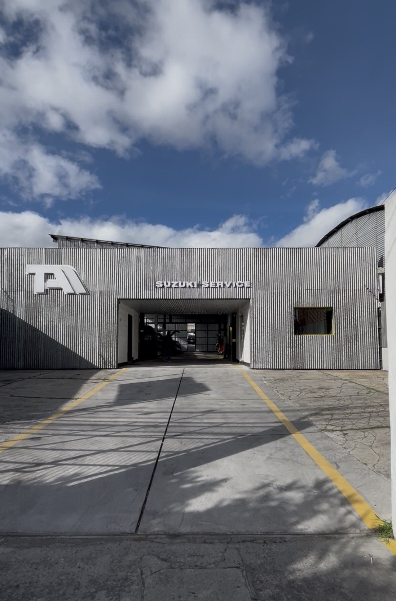
En ADT AUTOS recuperamos más que vehículos: recuperamos la tranquilidad de las personas. Sabemos que un accidente o una falla mecánica no solo afecta al auto, también genera incertidumbre sobre qué hacer, en quién confiar y cómo va a quedar el resultado final.
Por eso trabajamos como un taller moderno, no como uno improvisado. Cada vehículo que entra a nuestras instalaciones pasa por procesos claros y documentados —desde la recepción hasta la entrega— para que en ningún momento del camino te quede la duda de qué se está haciendo con tu auto ni por qué.
Nuestro equipo combina experiencia técnica en colisión, pintura, mecánica y estética automotriz, con un mismo criterio: precisión antes que rapidez, y transparencia antes que promesas. No prometemos ser los únicos ni los mejores — preferimos que lo compruebes en el resultado y en la forma en que te tratamos durante todo el proceso.
Cada reparación es, para nosotros, una nueva oportunidad de devolverle a alguien la confianza en su vehículo.
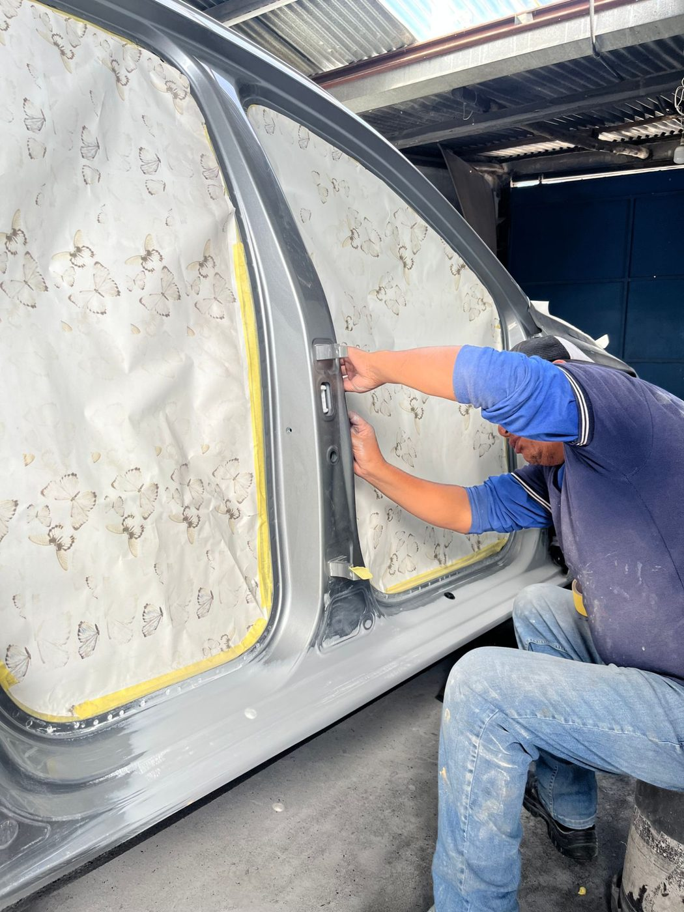
Somos un taller moderno, con procesos claros, calidad constante y atención personalizada — no un taller improvisado ni uno más del montón.
Inspeccionamos tu vehículo apenas llega, registramos su estado inicial con fotografías y documentamos cada detalle visible. Desde este primer contacto sabes exactamente qué esperar del proceso.
Nuestro equipo técnico evalúa a fondo los daños, tanto estructurales como estéticos, y determina el alcance real de la reparación. Nada se asume: cada diagnóstico se basa en revisión directa del vehículo.
Te presentamos un diagnóstico claro y una proforma detallada antes de mover una sola pieza. Ninguna reparación comienza sin tu aprobación explícita — decides con información completa, no con suposiciones.
Ejecutamos el trabajo con los procesos y estándares que corresponden a cada caso —enderezada, pintura, mecánica o estética—, según lo que tu vehículo necesite. Cada etapa pasa por control de calidad antes de avanzar a la siguiente.
Revisamos el resultado contigo, verificamos que todo esté conforme a lo acordado y te devolvemos tu vehículo listo — no solo reparado, sino con la tranquilidad de saber que el proceso fue transparente de principio a fin.
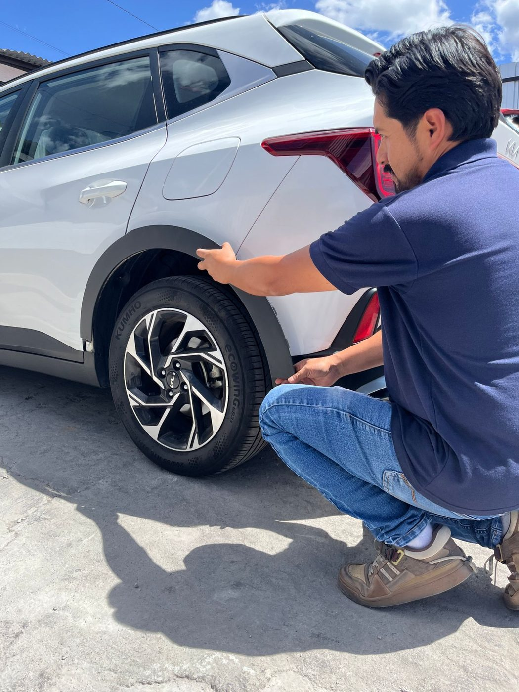
Restauramos la estructura y el aspecto de tu vehículo después de un accidente, sin importar la magnitud del daño. Trabajamos con procesos definidos para devolverlo a condiciones seguras y funcionales.
Aplicamos pintura con igualación exacta de color y acabado uniforme, en cabina controlada, para un resultado duradero. Cada capa se revisa antes de continuar con la siguiente.
Corregimos la estructura del vehículo con equipos de medición precisos, devolviendo la geometría original sin comprometer la seguridad ni el desempeño.
Diagnosticamos y solucionamos fallas mecánicas, además de dar mantenimiento programado que evita problemas mayores a futuro. Cuidamos el motor antes de que el motor te obligue a parar.
Revisamos y renovamos los fluidos y componentes esenciales del motor siguiendo los intervalos recomendados, para que el desempeño se mantenga estable en el tiempo.
Evaluamos el sistema de frenos, la suspensión, y realizamos escaneo computarizado para detectar fallas que no siempre son visibles a simple vista, pero sí afectan tu seguridad.
Recuperamos el brillo original de la pintura, eliminando marcas de uso y opacidad, sin desgastar la capa protectora del vehículo.
Reparamos zonas específicas con daño visible —pintura opaca, faros amarillentos— devolviendo claridad y presentación sin necesidad de reemplazar la pieza completa.
Eliminamos rayones superficiales y profundos con técnicas de pulido y retoque de precisión, evaluando cada caso según la profundidad del daño.
Incorporamos accesorios y mejoras a tu vehículo con instalación profesional, cuidando que cada pieza encaje sin alterar el resto del sistema.
Elaboramos y gestionamos la proforma directamente con tu aseguradora, agilizando el proceso para que tú no tengas que lidiar con la parte administrativa.
Casos reales de nuestro trabajo. Desliza cada imagen para ver la transformación. Por privacidad, las placas se cubren siempre.
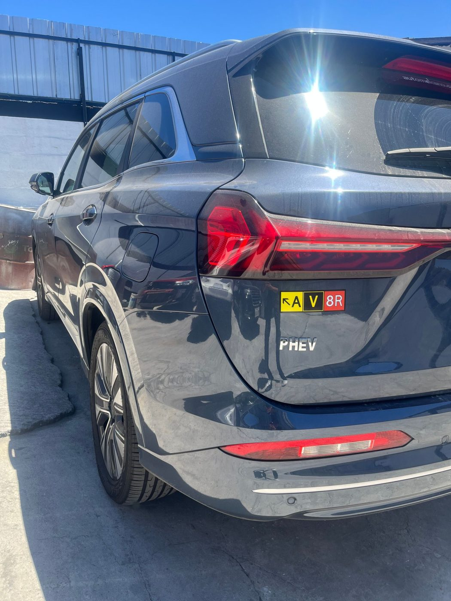
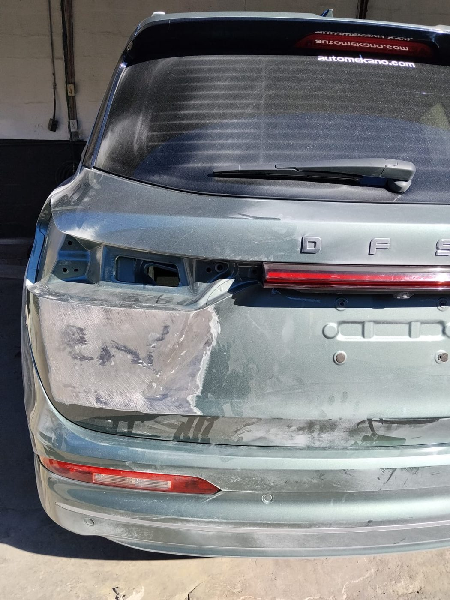
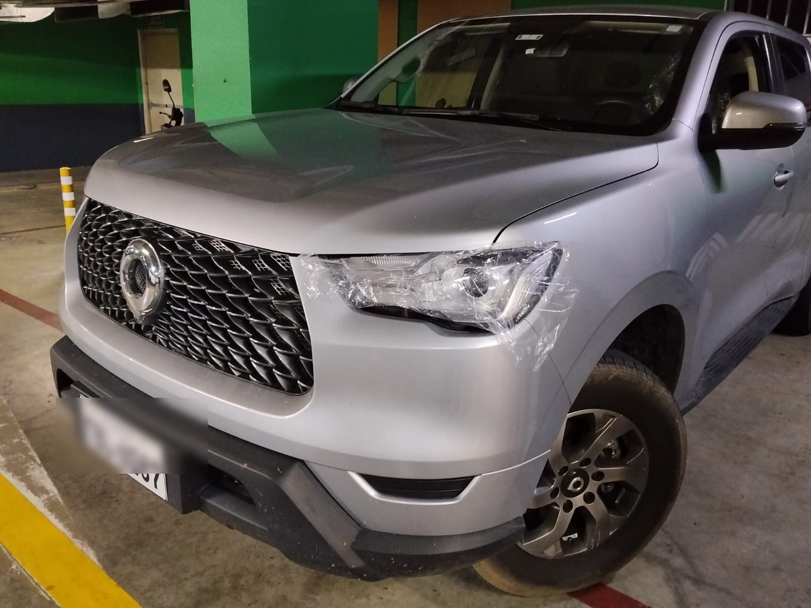
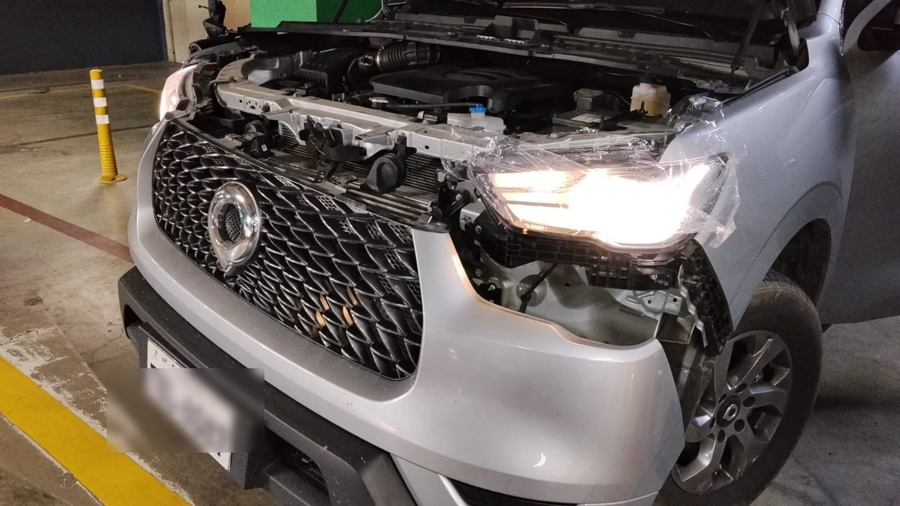
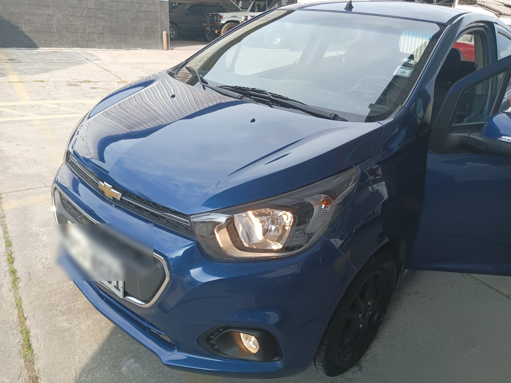
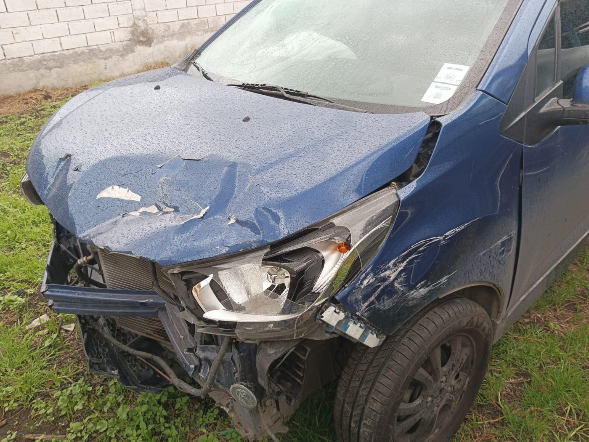
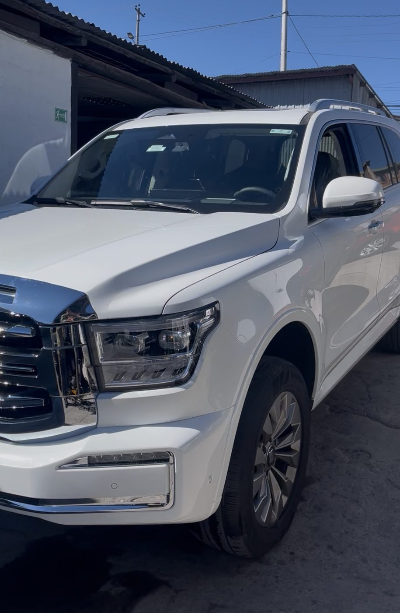
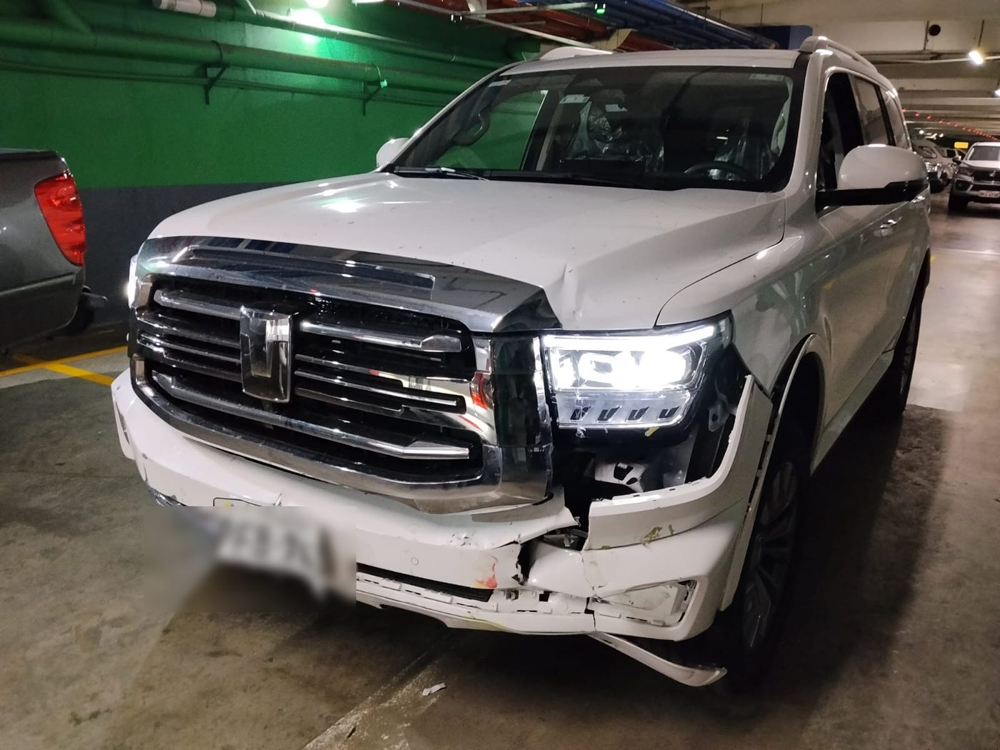
Próximamente, la experiencia de nuestros clientes.
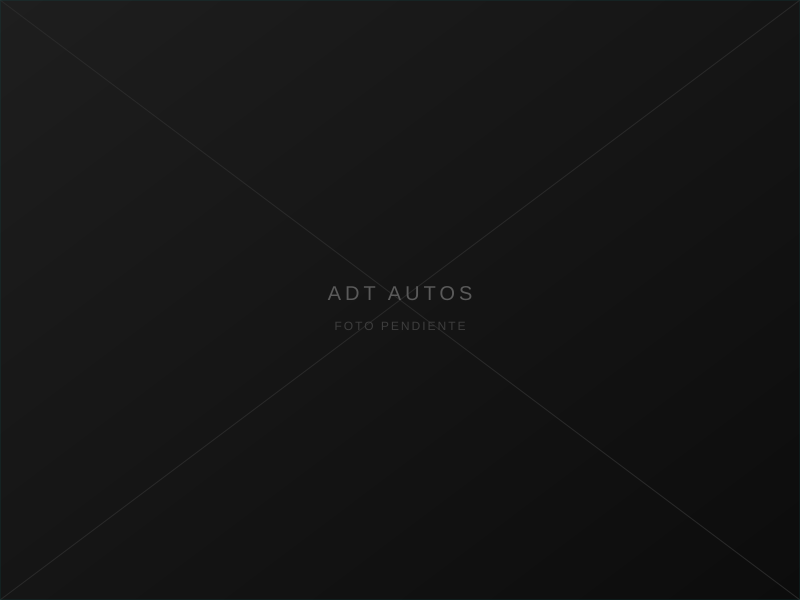
"Testimonio del cliente próximamente."
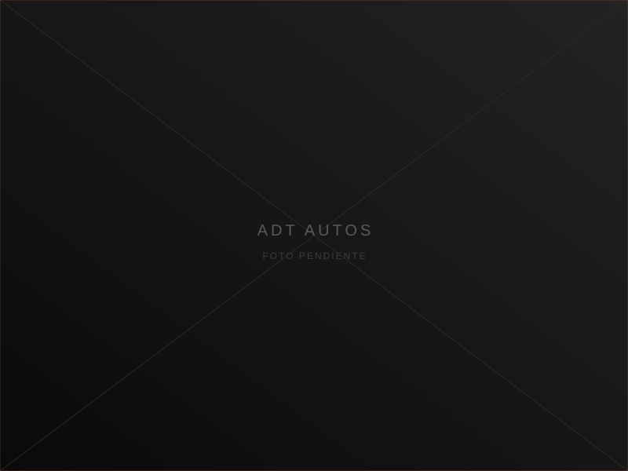
"Testimonio del cliente próximamente."
"Testimonio del cliente próximamente."
"Testimonio del cliente próximamente."
Avenida Río Coca, Quito — a 25 metros del Tuti.
Cuéntanos qué necesita tu vehículo y te contactaremos a la brevedad.
Avenida Río Coca, Quito — a 25 metros del Tuti.